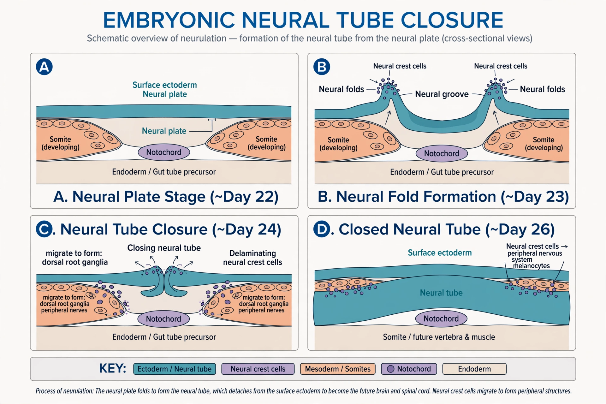

| Anencephaly | |
|---|---|
 | |
| Specialty | Medical genetics, neurology, obstetrics |
| Cause | Failure of the neural tube to close at the cranial end (by day 23–26 of gestation) |
| Risk factors | Folate deficiency, certain medications, maternal diabetes, genetic factors |
| Diagnosis | Prenatal ultrasound; elevated alpha-fetoprotein |
| Prevention | Folic acid supplementation before and during early pregnancy |
| Prognosis | Universally fatal; most affected infants are stillborn or die within days |
| Frequency | Roughly 1 in 4,600 births in the United States |
Anencephaly is the absence of a major portion of the brain, skull, and scalp that occurs during embryonic development. It is a cephalic disorder that results from a neural tube defect that occurs when the rostral (head) end of the neural tube fails to close, usually between the 23rd and 26th day following conception. Strictly speaking, the Greek term translates as "no in-head" (that is, totally lacking the inside part of the head, the brain), but it is accepted that children born with this disorder usually only lack a telencephalon, the largest part of the brain consisting mainly of the cerebral hemispheres, including the neocortex, which is responsible for cognition. The remaining structure is usually covered only by a thin layer of membrane — skin, bone, meninges, etc. are all lacking.
With very few exceptions, infants with this disorder do not survive longer than a few hours or days after birth. The condition is often detectable on prenatal ultrasound from about 11–14 weeks because the cranial vault is absent, giving the fetus a characteristic appearance. Maternal serum alpha-fetoprotein screening also flags most cases.
The cause is multifactorial: genetic susceptibility in genes of the planar cell polarity pathway and folate metabolism interacts with environmental factors. Folate deficiency is the best-established modifiable risk: periconceptional folic acid supplementation (400 µg daily for most women of childbearing age, higher doses after a previously affected pregnancy) reduces the risk of neural tube defects by roughly 50–70%, and mandatory folic acid fortification of flour in many countries has measurably lowered incidence.
Anencephaly is incompatible with sustained life; there is no treatment. The condition has figured prominently in medical-ethical debates, including proposals concerning organ donation from anencephalic newborns and, in several jurisdictions, exceptions to abortion law, as in Brazil's 2012 Supreme Court ruling permitting termination of anencephalic pregnancies.
See also: Neural tube defect · Spina bifida · Folate